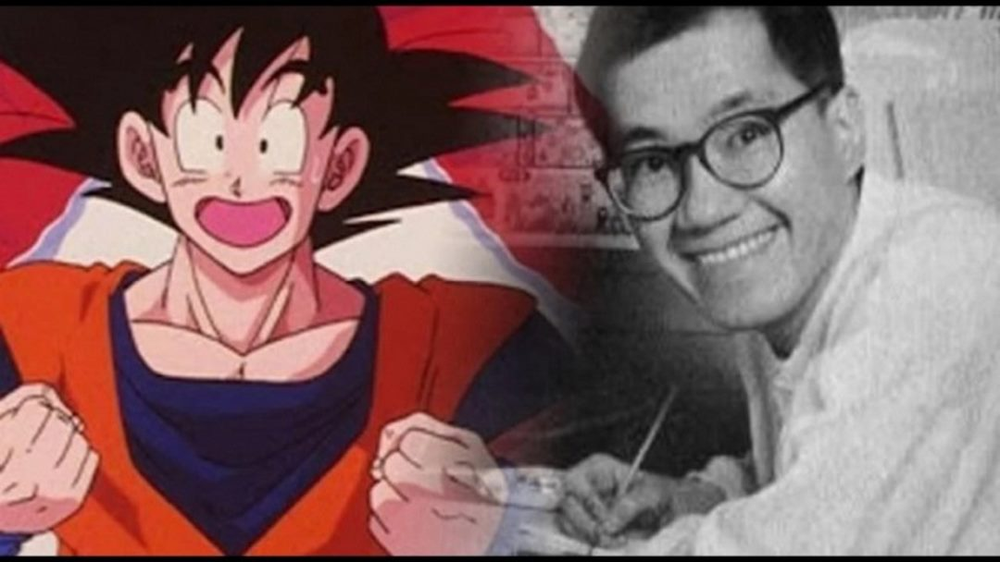
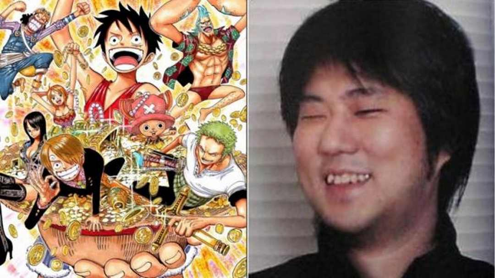

Danh sách các tác giả nổi tiếng Dưới đây là một số tác giả nổi tiếng vẽ truyện tranh Manga:
Osamu Tezuka: được biết đến với biệt danh “God of Manga”, ông là một trong những người đầu tiên đưa truyện tranh Manga lên tầm cao mới. Những tác phẩm nổi tiếng của ông bao gồm “Astro Boy”, “Black Jack” và “Kimba the White Lion”.
Akira Toriyama: ông là tác giả của loạt truyện “Dragon Ball” và được coi là một trong những tác giả có ảnh hưởng lớn nhất đối với truyện tranh Manga và ngành công nghiệp giải trí Nhật Bản.

Rumiko Takahashi: tác giả của nhiều tác phẩm Manga nổi tiếng như “Inuyasha”, “Ranma 1/2” và “Maison Ikkoku”. Các tác phẩm của cô có nét vẽ tinh tế và đa dạng về nội dung.
Eiichiro Oda: được biết đến với tác phẩm “One Piece”, ông đã đưa nội dung về hải tặc trở thành một thể loại mới trong truyện tranh Manga.
CLAMP: là một nhóm tác giả bao gồm 4 nữ tác giả, bao gồm Nanase Ohkawa, Mokona, Tsubaki Nekoi và Satsuki Igarashi. Nhóm này đã tạo ra nhiều tác phẩm Manga nổi tiếng như “Cardcaptor Sakura”, “Tsubasa: Reservoir Chronicle” và “xxxHolic”.
Takehiko Inoue: được biết đến với tác phẩm “Slam Dunk” và “Vagabond”. Ông đã đưa môn bóng rổ trở thành một chủ đề phổ biến trong truyện tranh Manga và được coi là một trong những họa sĩ vẽ truyện tranh tài năng nhất.
Hiromu Arakawa: tác giả của tác phẩm “Fullmetal Alchemist”. Cô đã đưa đề tài khoa học viễn tưởng trở thành một chủ đề phổ biến trong truyện tranh Manga và đã đạt được thành công lớn với tác phẩm này.

Naoko Takeuchi Naoko Takeuchi: là tác giả của tác phẩm “Sailor Moon”. Bộ truyện này đã có một sức ảnh hưởng to lớn đến thế hệ trẻ của Nhật Bản và các nước phương Tây. Các nhân vật trong tác phẩm được xây dựng rất tốt và có thể tạo sự đồng cảm với độc giả.
Hirohiko Araki: là tác giả của loạt truyện tranh “JoJo’s Bizarre Adventure”. Tác phẩm này có nội dung phức tạp, tình tiết khá hấp dẫn và nổi tiếng với cách vẽ tương đối độc đáo. Các fan của tác phẩm thường được gọi là “JoJo’s Bizarre Adventure’s Bizarre Fans”.
Masashi Kishimoto: được biết đến với tác phẩm “Naruto”. Tác phẩm này đã trở thành hiện tượng toàn cầu và tạo ra một làn sóng lớn về Manga và Anime. Nội dung của tác phẩm có sự kết hợp giữa hành động, phiêu lưu, tình cảm và những thông điệp sâu sắc
Ảnh hưởng của truyện tranh Manga Truyền cảm hứng và ảnh hưởng đến nghệ thuật thế giới Truyện tranh Manga đã trở thành một phần không thể thiếu của nghệ thuật thế giới. Với những câu chuyện, tình tiết độc đáo và phong cách vẽ đặc trưng của Manga, nó đã truyền cảm hứng và ảnh hưởng đến nhiều tác giả và nghệ sĩ trên toàn thế giới. Các tác phẩm Manga như Dragon Ball, Naruto, One Piece, Attack on Titan, hay Sailor Moon đã trở thành nguồn cảm hứng cho rất nhiều bộ phim, trò chơi, và các tác phẩm nghệ thuật khác trên toàn thế giới.